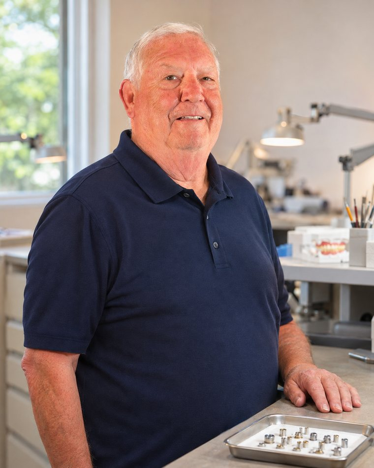
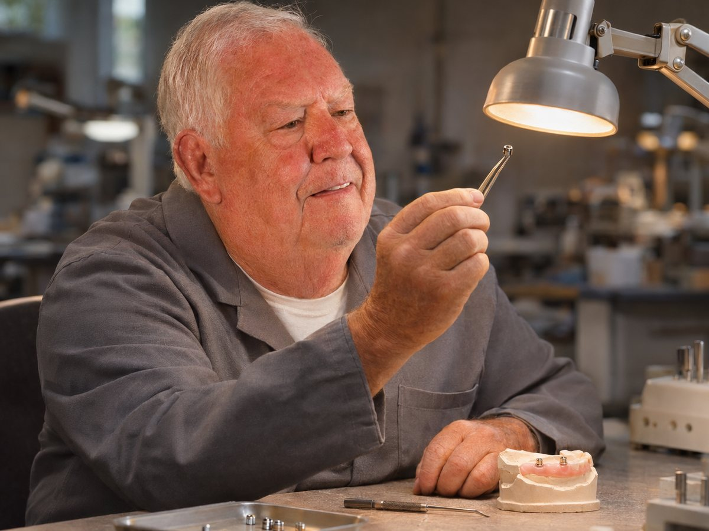
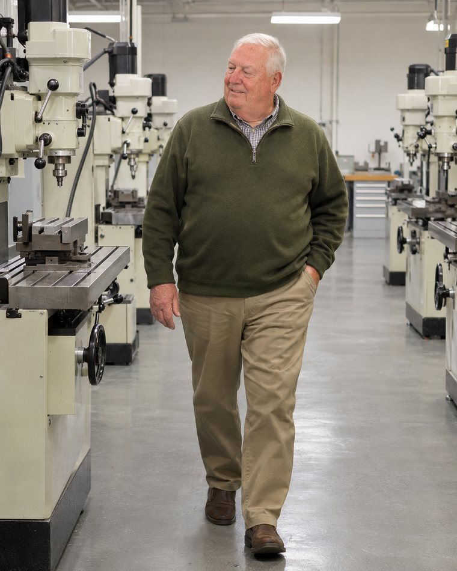
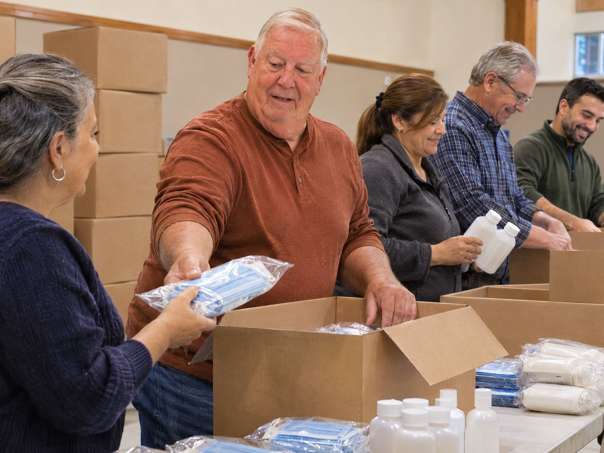
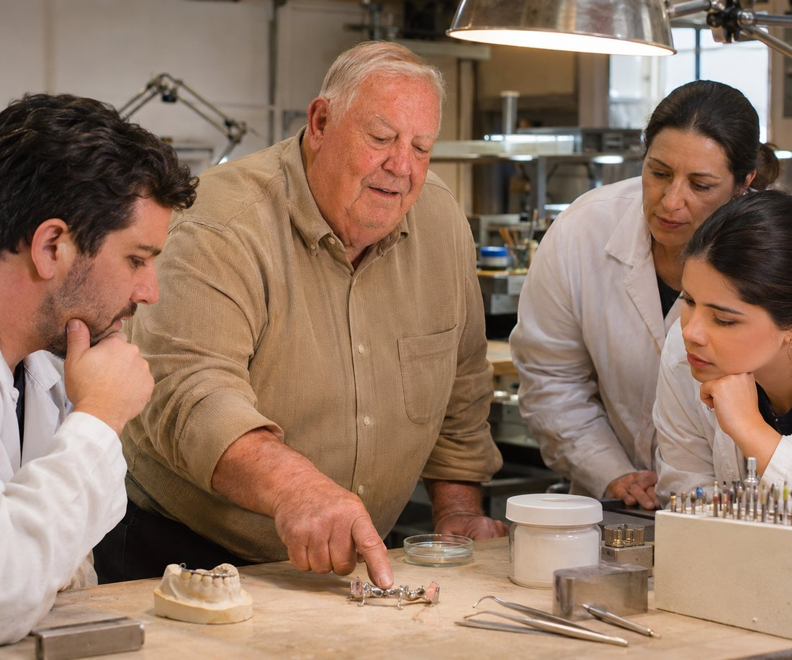
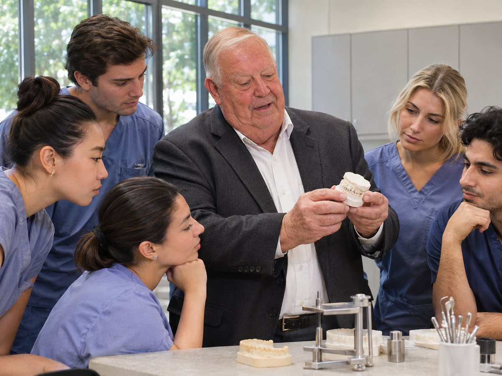
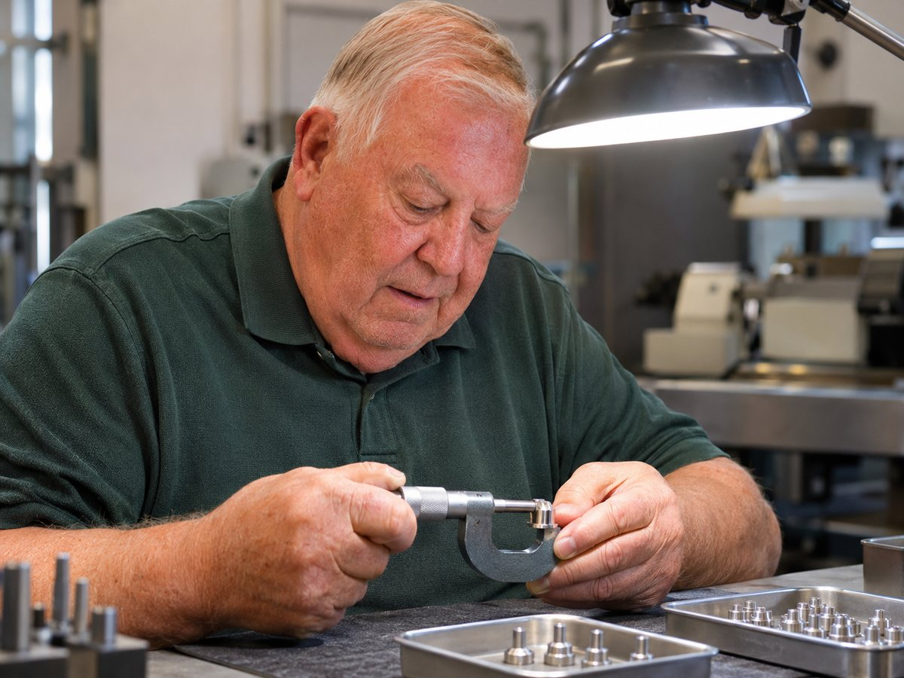
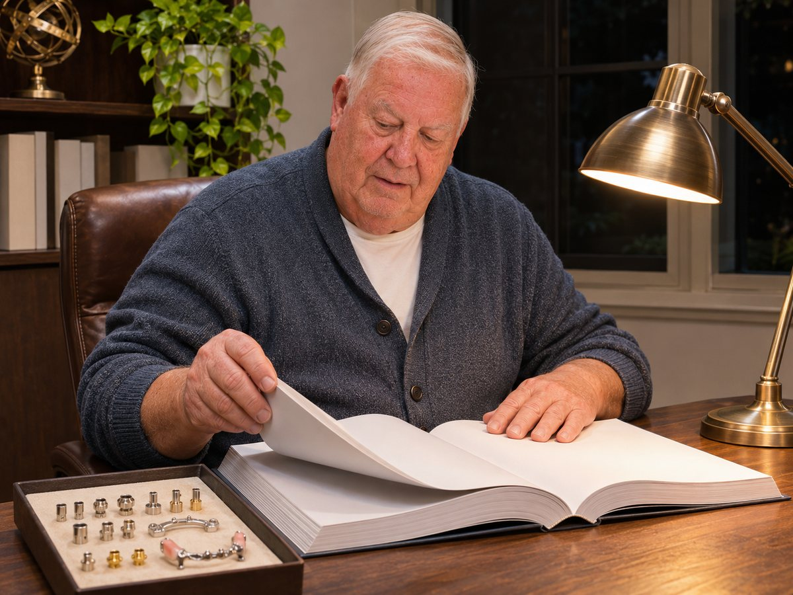
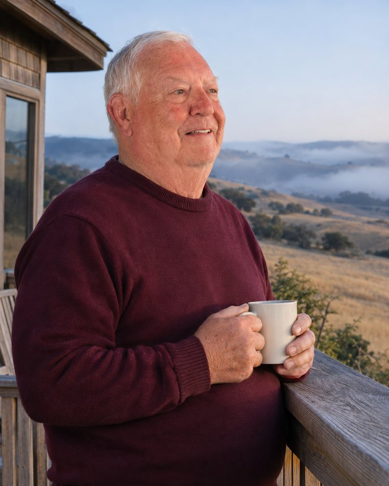

He founded Preat Corporation in 1980 and spent more than fifty years in the dental industry, making the small precision parts that hold a denture in place and teaching the laboratories and schools that use them.

Thomas G. Bormes graduated from the University of Minnesota in 1963 and went to work in a management role at MF Patterson Dental Supply Co. in Minneapolis. He has been in dentistry ever since.
In 1980 he founded Preat Corporation, a maker of precision attachments for partial dentures, and he ran it as president until he retired in 2016. The company he started is now a supplier of implant components, attachments and tools, with its home in Santa Maria, California.
It's hard to believe I've spent 53 years in the dental business.
Thomas G. Bormes, in LMT Magazine, March 2020
The PREAT precision attachment improves the function and the appearance of a partial denture without harming the teeth that are left. It is a small piece of machined metal, and the difference it makes is measured in whether somebody can eat comfortably and smile without thinking about it.
Preat began as a precision attachment company and moved on to implants and overdenture solutions. Across both, the work was the same: hold a tolerance, and make a part a laboratory can fit without a fight.
Graduated from the University of Minnesota and joined MF Patterson Dental Supply Co. in Minneapolis in a management role.
Founded Preat Corporation to make precision attachments for partial dentures.
Led the company's work with dental schools and trained dental laboratories in the use of its products.
Moved the company's focus onto implants and overdenture solutions alongside the attachment line.
Retired from Preat. The company is now based in Santa Maria, California.

A leading industry educator and a fervent supporter of dental laboratories.
LMT Magazine, March 2020He worked extensively with dental schools and trained laboratories on how to use precision attachments, which is the part of the job that does not show up on a product sheet.

He puts the credit on his parents, on his own drive, and on learning from the mistakes along the way, and he says he wants to leave the place better for his grandchildren.





Every picture of Mr. Bormes on this page is an AI-generated illustration, produced with his approval from a reference photograph. They are not photographs of real events.